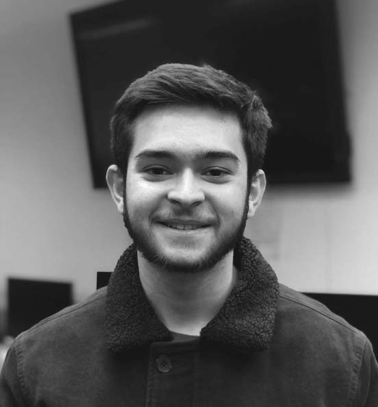

My name is Tynan Drake and I am studying Interactive Digital Media at Drexel University in Philadelphia. My studies are focused on UI / UX design, but I am also heavily involved in graphic design. I am currently growing a personal graphic-design based Instagram page that has grown to over two thousand followers in the past year.
